computer use 这个概念不算新，最早是 2016 年 OpenAI 提出来的，2025 年是各家 AI 模型引入浏览器的大爆发时期，看着 Agent 的光标像人一样点按，这个画面在浏览器里的 Operator、设计 Agent 产品 Pencil 里都已经见过；到今年 9 月刚发布的 Astra，Agent 操作范围从浏览器扩到了 Blender、Figma 这些专业桌面软件，而且干活不止光标点按一条路线，同一个任务里，它可以一边在软件界面上点按，一边在后台跑脚本、调生图工具。
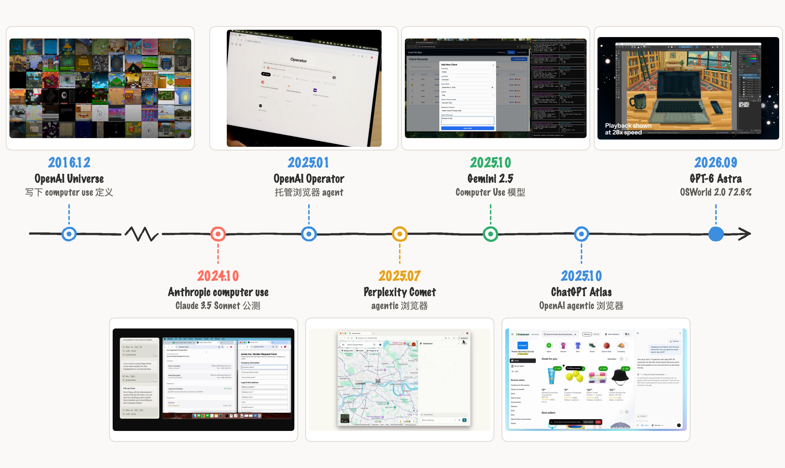
2016 年，OpenAI 最开始对 computer use 的定义，是让 AI 像人一样使用电脑，看屏幕像素，操作键盘和鼠标。那时 OpenAI 有一个叫 Universe 的训练平台，让 AI 在上千个游戏和网页环境里练习用电脑。后来 Anthropic 在 2024 年 10 月把 Claude 的 computer use 开放成公测 API，不过公测版的能力还很初级，Anthropic 当时的模型 3.5 Sonnet 不是盯着连续画面看的，它每操作一步截一张屏幕图，一页页拼出电脑上发生了什么，页与页之间短暂弹出的通知和弹窗就大概率会漏掉。也因为这样，滚动、拖拽、缩放这些人做起来毫不费力的操作，对模型都是挑战，当时在 OSWorld（衡量模型操作真实电脑桌面的基准测试）上的得分只有 14.9%。
三个月后 OpenAI 跟进发布 Operator，是一个在云端托管浏览器里替人浏览网页、填表下单的 agent 产品，底层是基于 GPT-4o 训练的模型，Operator 可以通过屏幕截图 "查看"浏览器，并使用鼠标和键盘与之"交互"，所以无需自定义 API 集成就能执行操作。半年后它并入了 ChatGPT 的 agent 模式，这条产品线走到今天是 ChatGPT Work。
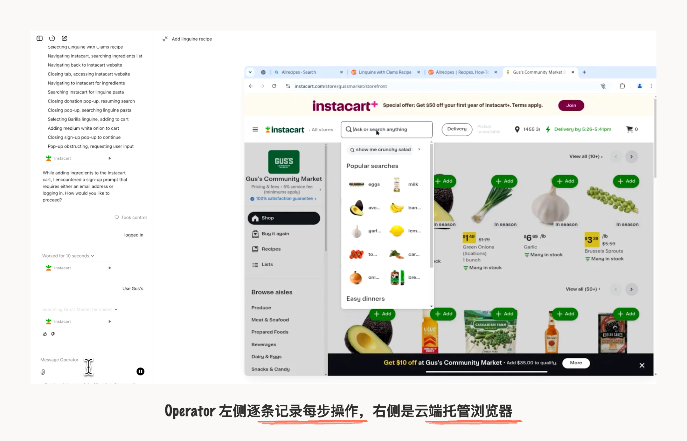
后来再到 2025 年 10 月 21 日，OpenAI 发布 Atlas 浏览器，Atlas 的 agent mode 是在本地浏览器里点击操作。可以直观看到 Agent 光标的操作交互轨迹。
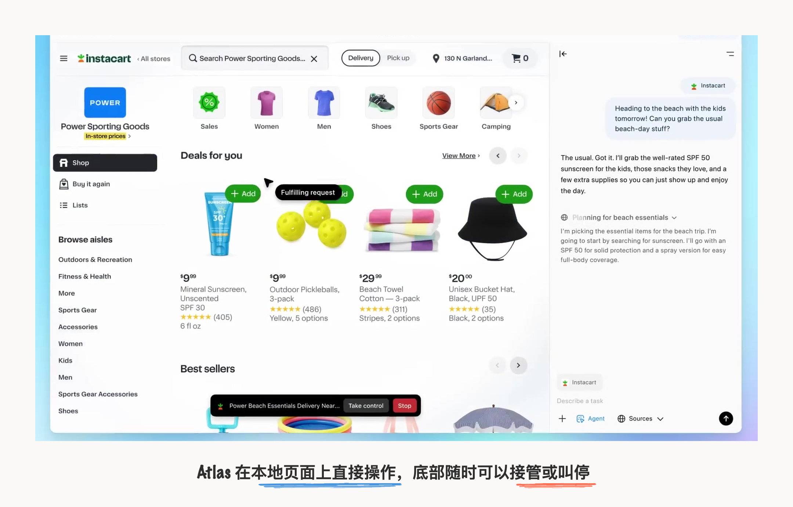
这次 Astra 的定位是"你在电脑上能做的任何事，Astra 都能替你做，而且快"，主打的优势有三个：computer use 本身最强，OSWorld 2.0 上得分 72.6%；复杂长时程任务能一口气干完，最难的端到端工作都能稳定输出，单个任务的耗时比上一代少了约 47%；还有超高标准的对齐，只做你授权它做的事，不越界乱动，测试里给模型划定权限范围，上一代模型在没有防护措施时，有 48.2% 的情况会做出范围之外的操作，Astra 这个比例是 0%。
在设计/创意这个领域，OpenAI 从去年 2025 年 10 月开始就接上了 Figma MCP，OpenAI 官方插件仓库里还有 Adobe、Canva、product-design、creative-production 这些设计向插件。而这次，Blender 也能直接调用了，它的优势在于自身开源，有完整的 Python 接口可以写代码驱动，还能渲染出图让它自查结果，正好是 Astra 这套能力最好的展示台。无论从 OpenAI 内部人员分享的作品，还是社区刷屏的作品，这爆火程度都显而易见。
那要真实感受 Astra 的提升力，就要拿上一代模型难做出来的任务。我今晚拿 GPT-6 Astra 做了三个设计任务：Blender 建场景、图片转绘并分层、网页 3D 交互，实测看看 computer use 是怎么玩儿的，其中 Agent 操纵电脑干活的整个过程，调了什么集成、跑了什么命令、中间怎么验证、看会不会碰到问题。
京都街景 3D 运镜动画
Blender 脚本驱动
第一个案例是生成 Blender 3D 动画，前后共 5 轮对话，最后成果是一段 24 秒、576 帧的京都商店街动画，效果不错。
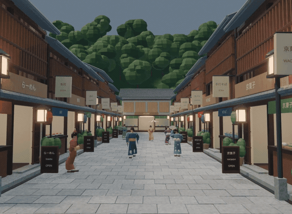
初始 prompt 是一张京都图片和一句简单提示词："在 Blender 里制作一个 3D 京都城市建筑"。其实第一轮的效果已经相当可以了，但是这一步只验证了图片复刻这一项做得很好；后面我就自己发挥想象，加点元素丰富街道热闹的氛围，比如穿日式和服的小人、门店商铺装饰、加点缓慢推进的镜头语言。除了人物面部没加细节、走路姿势有 bug，整体与 Astra 的对话非常流畅，体感是 Astra 在意图理解、长时间任务处理上非常丝滑，我基本没有到要反复纠错的地步。
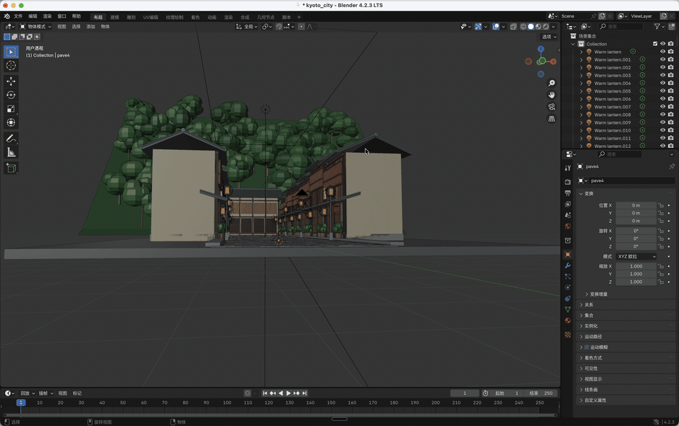
第二轮到最后一轮，我发给它的原话 prompt 都很直白：
现在这个画面里面缺少人，所以你再增加几个行走的人。这些人穿着日式和服。
每个人的姿势都要不一样。
现在路边的每一个建筑都是没有房间的感觉，门都是关的。应该是每一个都是一个店铺。增加一些卖日式食品的或者是体现日式商铺的一些门面。
制作摄像头运动动画，随着底部时间轴，镜头慢慢向里推进，人动起来：行走、逛街、走向店铺并停留，店铺的门口的元素也动起来，整体塑造热闹的城市街景氛围。
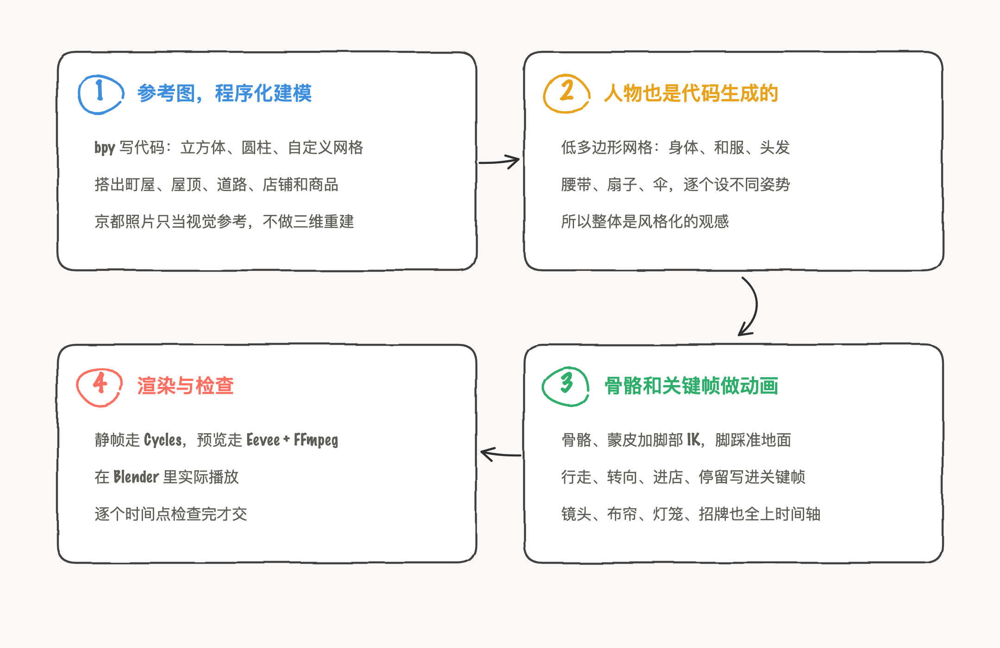
computer use 对于用户来说的体感，是会有一个代表 Agent 的光标出现在软件上，替你点按、拖拽。但是 Blender 界面上的 Agent 光标一直没动，只是定在中间闪烁，这是因为 Blender 有一套完整的 Python 接口，背后都有对应的代码调用去做操作；Astra 直接在后台调这套接口改场景数据，改完由 Blender 把新状态替换到视口里。所以画面变了，光标一直没动，也看不到中间的操作过程。
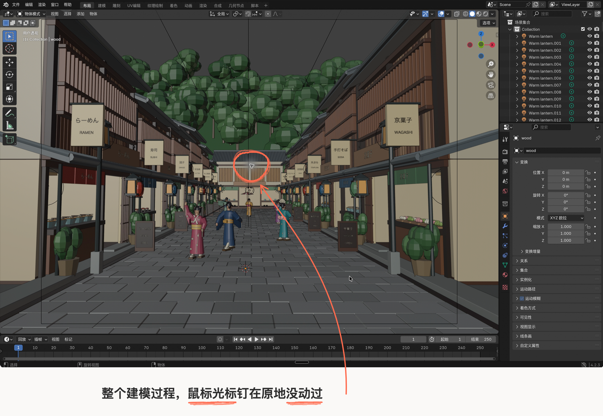
京都街景油画
Figma 拆层补齐
第二个案例做绘图分层，前后十来轮对话，成品是一份真正可编辑的 Figma 分层文件：梵高风格的京都街景油画拆成 6 个能单独移动的图层，挪开前景物体，后面的背景也是完整的。
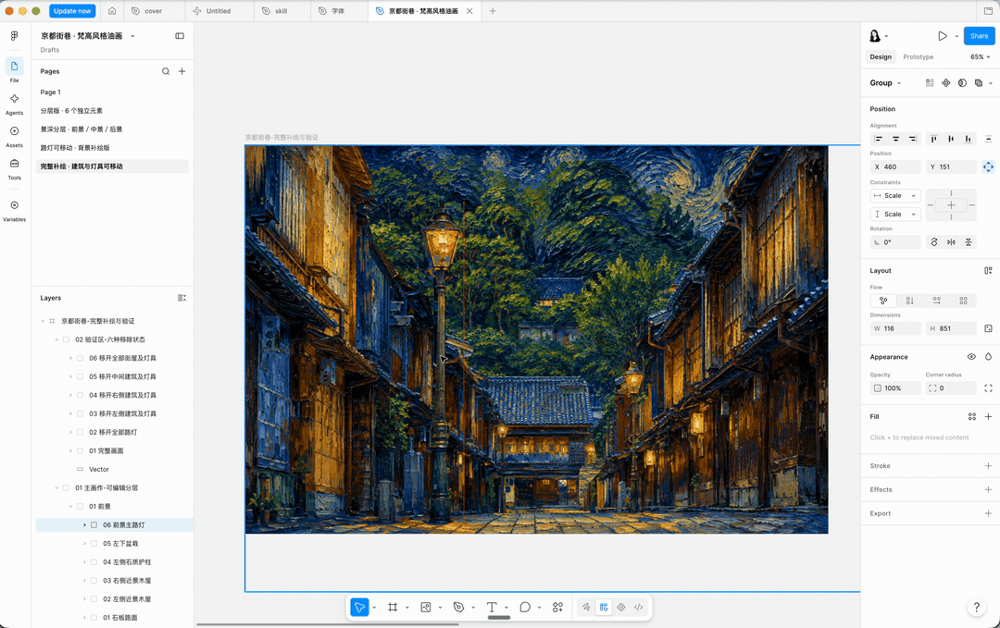
我一开始发了一张京都街巷的参考照片给 Astra，说"在 Photoshop 里画一个京都城市建筑，风格采用梵高的绘画风格"。
Astra 加载了 Computer Use 集成之后，发现我的 Photoshop 用不了了。我就说"换个软件吧，换成 Figma"。
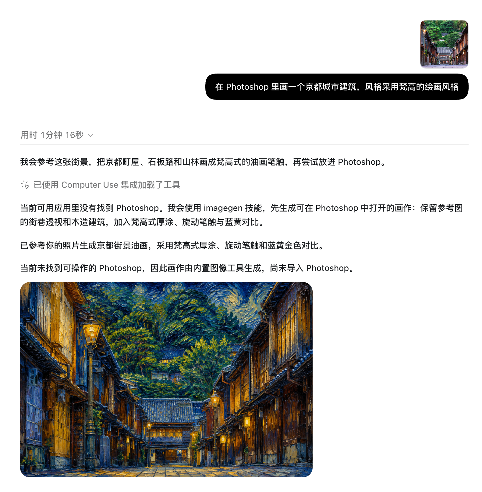
之后，Astra 同时调了 Com.figma.desktop 和 Computer Use 两个集成：先检查可用的导入方式，用 figma-create-new-file 技能新建文件，把油画以图片图层方式放入画布，同时 Agent 鼠标自己在 Figma 里点击操作，把文件名改成了"京都街巷 · 梵高风格油画"。
后面我新提的需求是油画图片分层，原话依次是：
但是怎么是一整张图，要分成的
在 Figma 里面你拆分层级有问题。你没有按照前景、中景、后景、每个元素物体这些层级去拆分。
有个问题：比如说你把其中的那个路灯拆层之后，后面的背景就变成空白的了。你没有自动补上背景，是吧？因为我有可能会要移动路灯，那个原来路灯的位置不就被空了吗？
那你能重绘吗
还有另外的路灯、左侧建筑、右侧建筑、中间建筑
接下来拆层花了 3 分 57 秒，中间经历了一次方案切换。Astra 先按"建筑、山林天空、路面、灯光"的分类去重绘拆分，提前说了"拆分时会重绘被遮挡的部分，细节可能与原图略有变化"。拆完之后，问题就出在元素重叠区域就被抠掉了。后面 Astra 通过生图模型垫图的方式，补齐了被抠掉的区域。
这次在 Figma 里能直观看到 computer use，Agent 光标在 Figma 画布上移动、间歇性地很忙。在左侧图层列表里逐层命名，在右边画布上拖动元素、验证是否补全了。
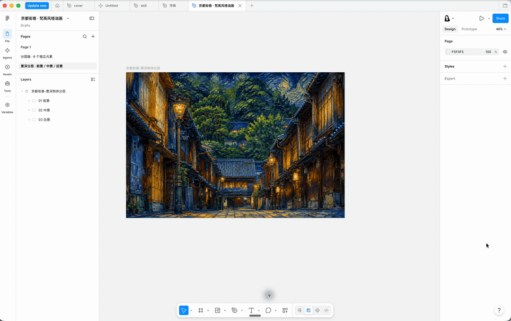
整个实现过程分三步，头尾两步靠生图模型，中间那步是纯几何计算。第一步照片转油画，用的是 Codex 内置的 image_gen 图像生成工具，保留参考图中的京都街巷的构图、建筑和透视，加入梵高式厚涂、旋动笔触和蓝黄对比，重新生成了一张 1536×1024 的位图。第二步拆层，它根据画面估算建筑、路灯这些物体的轮廓，用 Python 和 Shapely（处理几何图形的 Python 库）计算轮廓之间的重叠和遮挡关系，再生成一张包含原图和矢量蒙版的 SVG 导入 Figma。第三步补绘垫底图，再用 image_gen 生成"去掉路灯的建筑画面"和"去掉建筑的山林地面"，把补绘内容放到对应图层的下面，移动物体后露出的就是补画好的背景。
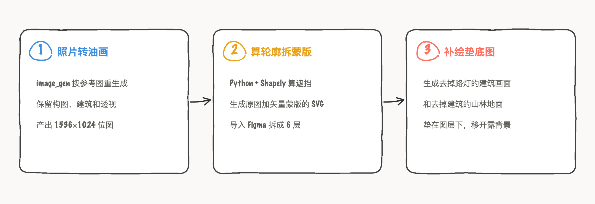
这个任务是典型的集成、shell 命令、脚本和 GUI 混在一起用的 AI 工作流，分工总结是：Figma 负责分层、组合和编辑，AI 工具负责转绘与背景重绘。交底也没少两条：轮廓是估算出来的，不是模型自动完成的精确物体分割；建筑之间被遮挡的完整结构，也没有全部重建。
网页 3D 交互
自主搭建资产组合
第三个案例做 iPhone 产品官网，前后 6 轮对话，成品是三屏页面，同一台 3D 手机随滚动从正面连续转到侧面、再转到背面。
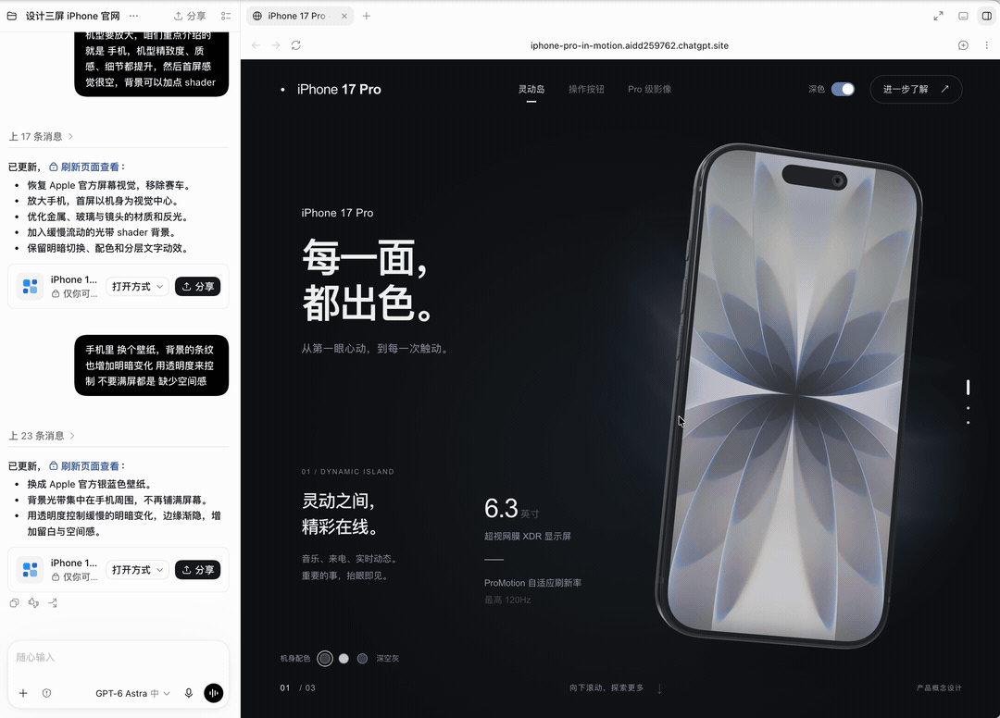
我第一轮用 /goal 指令给了一段比较完整的需求：
设计一个最新 iPhone 手机产品官网，整页共三屏，每屏的布局样式都不一样，但都是简约大气的排版和配色，使用 3D 写实风格的 iPhone 手机，根据页面滑动，3D 手机会有自身的立体角度旋转，展示手机的不同位置、区域的介绍，比如首屏是灵动岛、往下滑动时角度旋转到侧边操作按钮、再往下滑动时角度旋转到背部的多个摄像头，每个转场时对应的文字信息介绍也会缓慢的淡入
出了第一版之后我又给了 5 轮反馈，原话依次是：
浅色模式或者深色模式，哪个好看？你看着制作
手机屏幕内放 3D 游戏界面 而且得是动态的
文字不要遮挡机身，页面增加深色模式和颜色切换开关，手机颜色改为深空灰；文字的入场动画现在太平均了，每个样式的文字都要有节奏，比如一组文字，要先出主文字，而且动效样式都要不一样
手机界面这个 3D 赛车画面 不好，改成 apple 官方的；然后机型要放大，咱们重点介绍的就是手机，机型精致度、质感、细节都提升，然后首屏感觉很空，背景可以加点 shader
手机里 换个壁纸，背景的条纹也增加明暗变化 用透明度来控制 不要满屏都是 缺少空间感
前三轮在定方向，后三轮已经是设计细节了，调试一些遮挡关系、动效节奏、材质质感、留白空间感。
在这个案例里 Astra "操纵电脑"的方式就是改代码然后重新部署，整个过程里没有看到它操作任何桌面软件的界面。即使是偏复杂、多工具调用的长时间任务，Astra 体现了超高的自主性，除了写网页，它自己搭起了一条资产管线：找到 Apple 官方模型，用 Blender 做格式转换（用脚本，录屏里同样看不到界面操作），再交给网页端渲染。人类（我）的干预引导，质感、反光、空间感、明暗节奏，Astra 最多两次就准确地实现了。
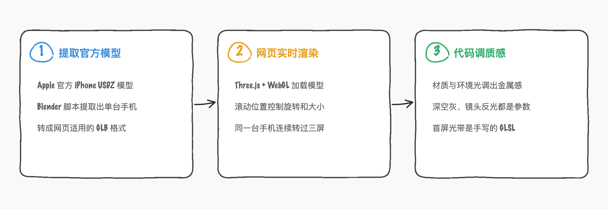
测这个案例是因为我在 Fable 5 也做过，当时就光是一个 3D 手机模型，就效果不行，质感出不来、3D 感也不行，因为 Fable 5 自主只会用矢量绘制，靠一层层贴出来假立体效果。而 Astra 自主去搜 Apple 官方的 USDZ 模型转成网页能用的 GLB，再用 Three.js 实时渲染，机身的金属质感、镜头反光、转起来的立体感，都是真 3D 模型才能出来的效果。
在这几个 AI 工作流里，对设计师来说，本质上没什么颠覆，只是从 UI/UX 领域扩到了 3D 建模领域，或者未来侵入到所有领域，AI 能做的只在于把需求想法帮人类快速在某个软件载体里实现、先看到效果，就到这一步。在 UI/UX 领域，AI 无法自主生成的创意、质感、情感层面设计，在 3D 领域仍然不能。
从人机 + Agent 协作的角度，三个任务做下来，发现同样是 computer use，在不同的任务和操作的工具中，用户体验感知完全不同：Blender 全程只有 AI 对话在滚动展示进程，光标一动不动；Figma 能看着 Agent 的光标在画布上忙；3D 官网完全底层代码去实现，GUI 层完全没有。
未来 Agent 背景下，People Use 与 Computer Use 要共存了。GUI 点按只是备选项，有代码接口就写代码，没有接口地方才动光标。这次实测里已经能看到苗头，Blender 因为接口齐全，反而成了三个案例里跑得最顺的。软件要兼顾两个对象：给人看的界面，给 Agent 用的接口。
本文三个案例均为作者在 ChatGPT（GPT-6 Astra）中的一手实测，录屏、截图与 prompt 均为原始记录；Figma MCP 与官方插件信息来自 OpenAI 官方插件仓库 github.com/openai/plugins；computer use 概念与进展节点来自 OpenAI 与 Anthropic 的官方发布视频及公告，正文 Operator、Atlas 演示截图与时间轴图内的产品界面画面分别取自 OpenAI、Anthropic、Perplexity、Google 的官方发布视频与页面。